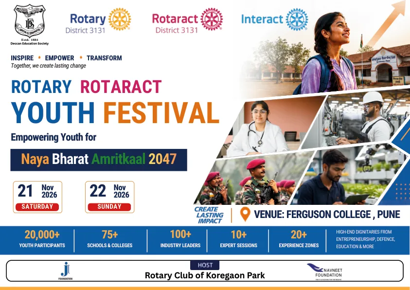

Innovation challenges
Explore AI, drones and new technologies. Challenge formats will be announced.

Explore innovation, careers, arts and culture.
Food coupon eligibility for participants below 16.
A youth innovation festival for ideas, technology, leadership, and nation-building.
Rotary & Rotaract District 3131 and Deccan Education Society bring young people together for two days of discovery at Fergusson College, Pune.
Explore the possibilities of a developed, self-reliant India through industry, education, technology, entrepreneurship and culture.
Art, craft, music, drama, a job fair, startups and the Indian Food Festival bring the programme to life.
विकसित आणि आत्मनिर्भर नव्या भारताची प्रत्यक्ष ओळख करून देणारा युवा महोत्सव — नया भारत २०४७.
DRDO · NDRF · CRPF · Artificial intelligence · Agri-tech · 3D printing · Aircraft · Drones · Medical technology · Pharma · Textiles
Discover emerging industries, meet professionals and explore career and entrepreneurship opportunities.
Speaker photos, roles, organisations and mentor profiles will be published after confirmation.
Listed in the organisers’ event announcement. Guest appearances and programme details are subject to change.
Explore AI, drones and new technologies. Challenge formats will be announced.
Discover career guidance and skill-building opportunities. Session details will follow.
Meet students, educational institutions, industry professionals and entrepreneurs.
Explore art, craft, music, drama and the Indian Food Festival.
Certificate availability and recognition criteria await organiser confirmation.
Both festival dates are confirmed. The organisers have yet to publish which sessions will run each day and at what times.
Session list and timings to be announced.
Session list and timings to be announced.
The festival programme includes innovation and technology showcases, career guidance, skill-building workshops, expert talks, entrepreneurship, arts and culture. Check the day-wise schedule before booking for a specific activity.
For programme enquiries, call Dr. Santosh More at +91 90110 23332.
Rotary & Rotaract District 3131 · Deccan Education Society
Host · Rotary Club of Koregaon Park
21–22 November 2026 at Fergusson College, Pune, Maharashtra. Opening times will follow.
₹200 per person per day or ₹400 for both days. All ages pay the same price.
Each booking accepts 1–10 participants.
Choose Both days to include 21 and 22 November.
Participants below 16 on their selected visit date are eligible for the applicable food coupon.
Tickets are generally non-refundable and non-transferable, subject to the Refund & Cancellation Policy.
Yes. The booking person must have authority and consent for participants below 18.
Saving creates a pending registration. Entry requires verified payment. Payment collection will be enabled later.
Certificate availability and eligibility await organiser confirmation.
Contact Dr. Santosh More on 9011023332 with your registration ID.